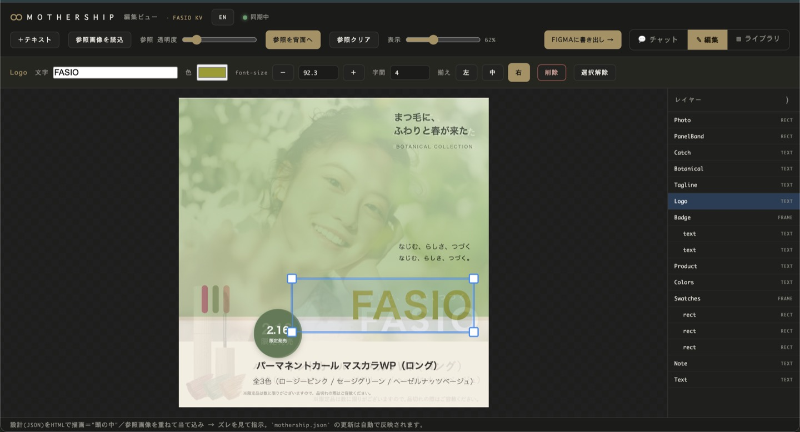
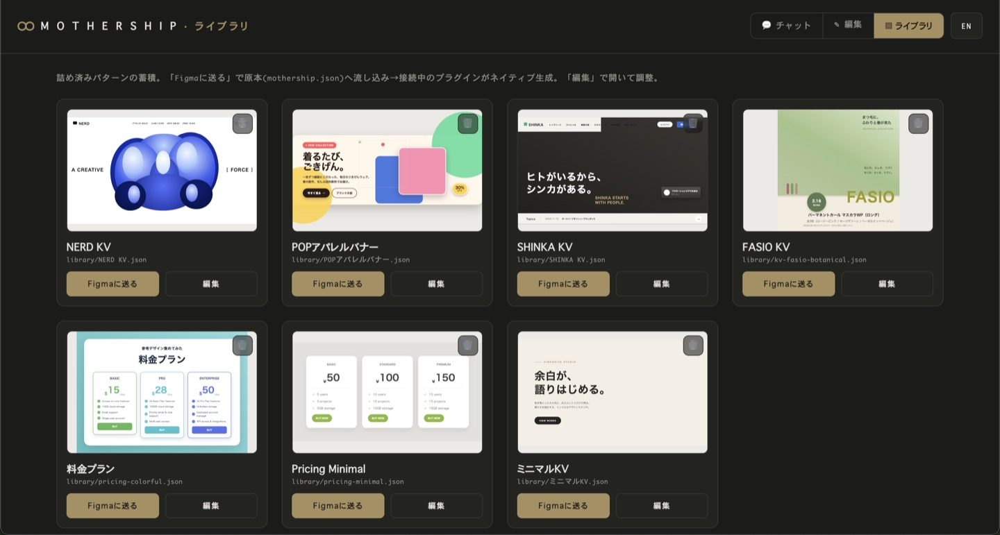

Three faces
ひとつのパネルで、作って・詰めて・貯める。
💬
チャット
話しかけてデザインを生成・修正。claude -p が mothership.json を編集 → Figmaへ。大きい画面でも開ける。

✎
詰める（studio）
参照画像を半透明で重ねて当て込み、要素をドラッグ・数値で調整。余白とタイポを詰め、整ったらFigmaへ書き出し。参照画像はデザインごとに紐づく。

▤
ライブラリ
詰め切ったパターンをサムネで一覧。「Figmaに送る」で原本に流し込み、ネイティブ生成。貯めるほど速くなる。
